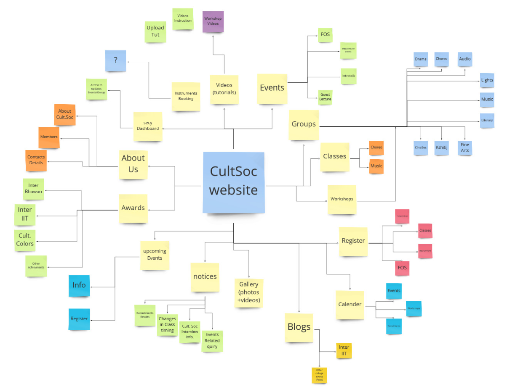
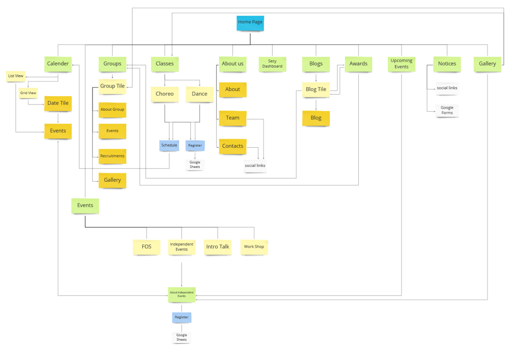
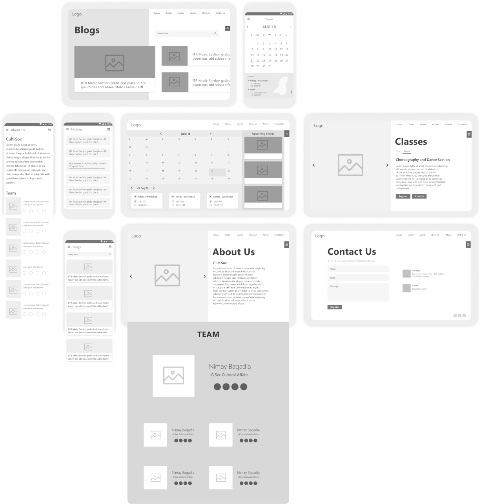

Target Audience
The Target Audience of the Cultural Council website are the Students of IITR, which are equal to about 8,000 under-graduate and post-graduate students. The Target audience could be divided in following groups :
- Under Graduates
- Post Graduates
- Research Scholars
- Institute Faculty
Also, we were specifically targeting the Freshers and the Sophomores in the Under graduates.
The brainstorming helped us figure out about the work we needed to do on the website but we needed data related to how much the students currently know about the cultural council and what problems do they face when they want to attend workshops or events conducted by the council.
We made a questionnaire consisting of such questions and interviewed students with different background around the campus.
Our Intention behind these interviews was to get the idea about how much do the students really knows about the cultural council and their problems related to the groups of the council so that we can solve those problems and provide the information that the student really needs and get a clear idea of the website we were making.
Questionnaire:
- Do you know about the different groups in the cultural council?
- Have you ever faced any difficulty when you are interested in attending any event conducted by the council?
- What did you do whenever two events clashed at the same time?
- Has it ever happened with you that you were unaware of an event that was held in the campus?
- Did you missed recrutments of any groups in which you wanted to get recruited?
- Are you aware of the classes held by the council for different activities?
- Can you easily contact the group’s secretaries to ask queries related to the groups?
- Are you aware of the achievements made by the cultural council?
IIT Roorkee being one of the best institutes of India boasts of having a rich cultural society. Having groups such as Choreography and Dance Section, Dramatic Section, Music Section etc. Competing and excelling in various cultural events, there was a need of a website to establish an online presence of the cultural council of IIT roorkee.
Plus, from user reseach we got to know about various problems people faced regarding cultural events. So to tackle this, we thought of proposing a mobile application. But later we realised we could merge both the concepts and come up with a website which could cater both the needs.
Feature Listing
After finding the solutions to the pain points and the sorting the issue of developing an app or a website, it was time where we generate ideas and solutions through repetitive sessions of brainstorming, sketching and discussions related to the development of the product.
After a few sessions, we made a feature document compiling all the features we ideated in the previous process and while solving the pain points.
Here is the compiled feature document :

Information Architecture
Information architecture (IA) is a science of organizing and structuring content of the websites, web and mobile applications, and social media software. Information architecture aims at organizing content so that users would easily adjust to the functionality of the product and could find everything they need without big effort.
We made the Information Architecture just after completing the feature doc. to get a more clear idea and so that it can help us to figure out any flaws in the website, since they are explicit.
Here is the Information Architecture of Cultural Council Website :

Wireframes
Wireframing is a way to design a website service at the structural level. A wireframe is commonly used to lay out content and functionality on a page which takes into account user needs and user journeys.
We made wireframes for both desktop view and the mobile responsive view of website. The wireframes helped us deciding the basic user interface of the website.
Here are some of the wireframes we iterated :
